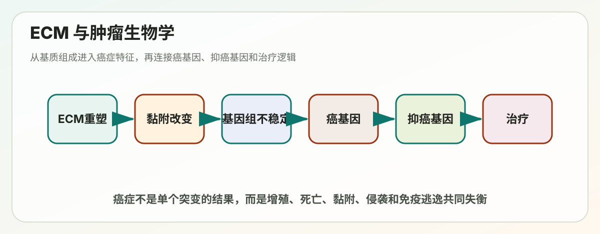

Lecture 19
Lecture 19: Extracellular Matrix and Cancer Biology

> 涵盖内容：细胞外基质（ECM）— 弹性蛋白、纤连蛋白、ECM 降解；肿瘤生物学（Cancer Biology） > 适合人群：基础薄弱、想系统理清概念的同学 > 使用方法：先看每节的"一句话核心"，再读详细解释，最后看"记忆要点"。不懂的地方反复看比喻部分。
---
学习地图（先看这张图！）
ECM（细胞外基质）
├── 已学：GAGs、透明质酸、蛋白聚糖、胶原蛋白
├── 本讲义：
│ ├── 2.5 弹性蛋白（让组织有弹性）
│ ├── 2.6 纤连蛋白（连接细胞与ECM的"双面胶"）
│ └── 3. ECM 的降解（蛋白酶 + 调控）
│
肿瘤生物学
├── I. 什么是肿瘤
├── II. 肿瘤的 7 大特征
├── III. 肿瘤关键基因（癌基因 vs 抑癌基因）
├── IV. 肿瘤的成因
└── V. 肿瘤的治疗---
第一部分：细胞外基质（ECM）
2.5 弹性蛋白（Elastin）
一句话核心
弹性蛋白让你的皮肤、动脉、肺有"弹性"——拉了能弹回来，就像橡皮筋。
1. 它有多强？
- 弹性是相同截面橡皮筋的 5 倍以上。
- 主要存在于动脉（血管随心跳一胀一缩，全靠它）、皮肤、肺。
2. 弹性纤维的组成
弹性纤维（elastic fiber）= 弹性蛋白（elastin） + 微纤维（microfibril）
- 微纤维主要由糖蛋白 fibrillin（原纤蛋白） 构成。
- 把弹性蛋白想象成"橡皮筋的橡胶"，微纤维是"包在橡皮筋外面的网"。
3. 弹性蛋白的氨基酸特点
- 富含 脯氨酸（Proline）和甘氨酸（Glycine）
- 没有糖基化（no glycosylation，这点跟胶原蛋白不一样）
- 含羟脯氨酸，但没有羟赖氨酸
> 💡 对比胶原蛋白：胶原蛋白既有羟脯氨酸又有羟赖氨酸，弹性蛋白只有前者。这是常考点。
4. 弹性蛋白的合成与组装
- 前体：原弹性蛋白（tropoelastin）
- 在细胞内合成 → 分泌到细胞外 → 高度交联形成弹性蛋白纤维和片层
5. 弹性蛋白的两种结构域（拉伸的关键！）
弹性蛋白分子中含有两类交替排列的结构域：
| 结构域 | 富含的氨基酸 | 功能 |
|---|---|---|
| 疏水域 | 脯氨酸 + 甘氨酸 | 提供弹性（像橡皮筋的"卷曲段"） |
| 交联域 | 丙氨酸 + 赖氨酸 | 与其他分子交联（像"连接钮扣"） |
6. 交联是怎么形成的？
关键酶：赖氨酰氧化酶（Lysyl oxidase），需要 Cu²⁺（铜离子）作为辅因子。
反应路径：
赖氨酸（Lysine）
↓ 赖氨酰氧化酶 + Cu²⁺
醛赖氨酸（Allysine，有醛基 -CHO）
↓ 与其他赖氨酸或醛赖氨酸缩合
形成 Schiff 碱、methacrylaldehyde 等中间产物
↓
最终形成 desmosine（锁链素）和 isodesmosine（异锁链素）—— 4 个赖氨酸链接的环状交联结构> 💡 形象理解：每根弹性蛋白分子是一根橡皮筋；desmosine 就像把好多橡皮筋串起来的"金属环"。拉伸时整张网都能形变，松手就弹回来。
7. 弹性蛋白相关疾病
| 疾病 | 病因 | 症状 |
|---|---|---|
| 动脉变薄 | 弹性蛋白突变 | 动脉壁变薄，平滑肌过度增殖 |
| 马凡综合征（Marfan's syndrome） | Fibrillin（原纤蛋白）突变 | 主动脉易破裂、晶状体移位、骨骼/关节异常（手指、四肢异常长） |
> ⚠️ 注意：马凡综合征是 fibrillin 突变，不是 elastin 突变本身。但因为 fibrillin 是弹性纤维的"骨架"，它坏了弹性纤维整体功能就出问题。
📌 记忆要点
- 弹性蛋白 = 富含 Proline + Glycine = "PG 蛋白"
- 关键酶 = 赖氨酰氧化酶 + Cu²⁺
- 关键交联结构 = desmosine
- 马凡综合征 = fibrillin 突变
---
2.6 纤连蛋白（Fibronectin）
一句话核心
纤连蛋白是"双面胶"——一面贴细胞（通过整合素），一面贴 ECM（胶原、肝素等）。
1. 基本性质
- 是一个大糖蛋白二聚体（dimer），由 二硫键（disulfide bond） 连接两条链
- 既可以可溶存在（血浆中），也可以形成不可溶的纤维
- 关键点：只有在感受到"张力（tension）"和细胞表面受体时，才会自组装成纤维（不会自己乱聚集）
> 💡 类比：纤连蛋白单体像一根松软的绳子。只有当细胞"拉一下"它，它才会展开变成结实的纤维。
2. 纤连蛋白的结构域（一根多功能"接线板"）
从 N 端到 C 端，纤连蛋白依次有结合不同分子的区域：
N —— [纤维蛋白结合] — [胶原结合] — [整合素结合 RGD] — [肝素结合] — [纤维蛋白结合] —— C- 可以同时绑定：细胞表面整合素 + ECM 中的胶原、肝素 → 充当"桥梁"
3. RGD 基序（最重要的考点！）
RGD = Arg-Gly-Asp = 精氨酸-甘氨酸-天冬氨酸
- RGD 是纤连蛋白识别整合素（integrin）的关键氨基酸序列。
- 整合素读到 RGD 就抓住纤连蛋白。
4. RGD 的生物学和医学意义
1. RGD 短肽可以竞争性抑制纤连蛋白与整合素的结合（实验室常用工具）。 2. 含 RGD 的胞外蛋白可以引起血液凝固（血小板表面也有整合素）。 3. 某些蛇毒（如锯鳞蝰，saw-scaled viper）含有"解离素 disintegrin"——含 RGD 基序，会抑制整合素介导的血小板聚集 → 导致出血。
> 💡 临床应用：基于 RGD 设计的药物可用于抗血栓（如 eptifibatide）。
5. 纤连蛋白纤维在细胞表面的组装（实验图理解）
实验观察：迁移的小鼠成纤维细胞中
- 红色 = 肌动蛋白（actin）纤维
- 绿色 = 纤连蛋白
→ 纤连蛋白纤维与肌动蛋白纤维平行排列
这说明：细胞通过感受张力（actin 提供拉力）来组装纤连蛋白纤维。
6. 整合素的"激活态" vs "失活态"（回顾）
| 状态 | 形态 | 能力 |
|---|---|---|
| INACTIVE | 弯曲、紧凑 | 弱配体结合 |
| ACTIVE | 伸直、展开（约 20 nm 高） | 强配体结合 + 强胞内衔接蛋白结合 |
加入 RGD → 整合素由弯曲变为伸展（电镜下可见）。
📌 记忆要点
- 纤连蛋白 = 二聚体 + 二硫键
- 自组装需要张力 + 受体
- 关键序列 = RGD
- 临床联系：蛇毒 disintegrin、抗血栓药物
---
3. ECM 的降解（Degradation of ECM）
一句话核心
ECM 不是死的"水泥地"——它一直在被降解、重塑。这对伤口愈合、胚胎发育很重要，但也是肿瘤转移的关键。
1. 两类降解酶
| 类别 | 全名 | 依赖 | 特点 |
|---|---|---|---|
| MMPs | 基质金属蛋白酶（Matrix metalloproteinase） | Ca²⁺ 或 Zn²⁺ | 用金属离子（多为 Zn²⁺）切割肽键 |
| Serine protease | 丝氨酸蛋白酶 | — | 用活性中心的丝氨酸（Ser）切肽键 |
> 💡 MMP 结构图里的核心：Zn²⁺ 被 3 个组氨酸（histidine） 螯合住，组氨酸帮 Zn²⁺ 固定位置，Zn²⁺ 负责"剪断"蛋白。
2. 为什么要严格调控？
ECM 如果被乱降解，组织会"塌陷"。所以蛋白酶必须精准、局部、可控地被激活。
三种调控方式： 1. 局部激活（Local activation） 2. 限制在膜表面（Confined to membrane surface） 3. 分泌抑制剂（Secretion of inhibitors）
---
3.1 局部激活（Local activation）
例子：纤溶酶（Plasmin）—— 帮助溶解血栓
血栓形成 → 局部细胞分泌 TPA（组织型纤溶酶原激活物）
↓
TPA 在血栓位置把 纤溶酶原（plasminogen）→ 纤溶酶（plasmin）
↓
plasmin 降解纤维蛋白（fibrin）→ 血栓溶解调控点：
- PAI-1（纤溶酶原激活物抑制剂-1） 抑制 TPA
- α2-antiplasmin 抑制 plasmin 本身
> 💡 临床：心梗、脑梗时静脉注射 TPA 就是利用这个机制紧急溶栓。
3.2 膜表面限制（Membrane confinement）
蛋白酶必须绑在膜上才能活，离开膜就失活——这样保证只切"自己周围"的 ECM。
例子：
- 膜结合 MMP（如 MT1-MMP）：直接锚定在细胞膜上
- uPA（尿激酶型纤溶酶原激活物）：必须结合膜上的 uPA 受体才有活性
实验证据（Lee et al., 2023）：
- A 组：细胞有功能正常的 uPA 受体 → 蛋白酶活跃 → 肿瘤生长 + 转移
- B 组：受体被阻断 → 蛋白酶失活 → 肿瘤生长但不转移
> 💡 这说明：uPA 在膜表面的局限化是肿瘤转移的关键。这也是抗癌药物开发的一个靶点。
3.3 抑制剂的分泌（Inhibitors）
| 抑制剂 | 全名 | 抑制对象 |
|---|---|---|
| TIMPs | Tissue Inhibitors of Metalloproteinases | MMPs |
| Serpins | Serine Protease Inhibitors（如 α1-抗胰蛋白酶） | 丝氨酸蛋白酶 |
Serpin 的工作方式（两种结局）： 1. 形成"自杀复合物（suicide complex）"——serpin 变性，蛋白酶被永久抑制（双双失活）。 2. 蛋白酶成功切断 serpin，serpin 失活，蛋白酶继续工作。
> 💡 形象比喻：Serpin 像是"自爆背心"。和酶抱在一起的时候有 50% 概率同归于尽。
📌 ECM 降解记忆要点
- 两类酶：MMP（金属）+ Serine 蛋白酶
- 三种调控：局部激活、膜限制、分泌抑制剂
- 经典例子：plasmin 溶栓、uPA 与肿瘤转移、TIMPs 抑制 MMP
---
---
第二部分：肿瘤生物学（Cancer Biology）
> 学习提示：这部分内容很多但有清晰的逻辑——先理解什么是肿瘤 → 它有什么特征 → 哪些基因导致它 → 它怎么来的 → 怎么治疗。逐层递进。
---
I. 肿瘤的本质（The Nature of Cancer）
历史背景
- 最早记录：埃及 Edwin Smith Papyrus（公元前 3000 年）——人类最早的医学文献中就有肿瘤描述。
- 2150 年前的埃及木乃伊 CT 扫描显示前列腺癌骨转移——说明肿瘤一直伴随人类。
- 词源：希腊语 karkinos（螃蟹）+ Oncos（肿胀）——希波克拉底用螃蟹形容肿瘤（因为肿瘤的血管像螃蟹的脚向外伸）。
肿瘤的定义（核心！）
肿瘤细胞由两个可遗传的特性定义： 1. 不顾正常生长限制地增殖（reproduce in defiance）——该停的时候不停。 2. 侵袭并定植于其他细胞的领地（invade and colonize）——跑到不该去的地方。
> 💡 缺一不可。只满足第一条（增殖失控）叫"良性肿瘤（benign）"；满足两条才叫"恶性肿瘤（malignant）"= 癌症。
上皮细胞癌的发展阶段（一定要记住的图）
正常上皮 → 增生 → 非典型增生 → 原位癌 → 微小浸润 → 恶性肿瘤
Normal → Hyperplasia → Atypical hyperplasia → Carcinoma in situ → Microinvasive原发肿瘤 vs 转移瘤
- 原发肿瘤（Primary tumor）：肿瘤最初发生的地方
- 转移瘤（Metastasis）：从原发肿瘤"播种"到其他器官的新肿瘤
- 时间尺度：原发肿瘤从单细胞长到 1 cm 可能需要 12 年，但形成转移可能只要几个月。
良性 vs 恶性
| 特征 | 良性肿瘤（Benign） | 恶性肿瘤（Malignant） |
|---|---|---|
| 是否致癌 | 否 | 是 |
| 是否包膜 | 有包膜（不扩散） | 无包膜 |
| 生长速度 | 慢 | 快 |
| 侵袭性 | 无 | 有 |
| 转移 | 不转移 | 转移 |
| 细胞形态 | 正常 | 核大、深染、形态异常 |
肿瘤按细胞/组织类型分类（5 大类）
| 类型 | 来源 | 例子 |
|---|---|---|
| Carcinoma 癌（最常见） | 上皮细胞 | 肺癌、乳腺癌、肠癌 |
| Sarcoma 肉瘤 | 骨头、软组织 | 骨肉瘤、横纹肌肉瘤 |
| Myeloma 骨髓瘤 | 浆细胞（产生抗体） | 多发性骨髓瘤 |
| Leukemia 白血病 | 血细胞（骨髓来源） | 急/慢性白血病 |
| Lymphoma 淋巴瘤 | 免疫系统（淋巴结、脾、胃、睾丸） | 霍奇金、非霍奇金 |
| Mixed types | 多种组织 | — |
> 💡 死亡和发病率数据（2018 美国）：消化道、呼吸道、乳腺、生殖道这几类癌症发病量最大。
肿瘤分期（Stages）—— 临床判断进展程度
| 分期 | 描述 |
|---|---|
| 0 期 | 原位癌（Carcinoma in situ）—— 最早期 |
| I 期 | 局部 |
| II 期 | 早期局部进展 |
| III 期 | 晚期局部进展 |
| IV 期 | 已转移（Metastasized） |
单克隆起源（Monoclonal origin）—— 大多数肿瘤来自一个异常细胞
证据 1：染色体易位
- 慢性髓性白血病（CML）：所有肿瘤细胞都有相同的费城染色体（Philadelphia chromosome）
- 这是 9 号染色体和 22 号染色体之间的相互易位（reciprocal translocation）
- 形成 9q⁺ 和 22q⁻（即费城染色体）
> 💡 所有细胞都有同一种易位 → 它们来自同一个"祖先细胞" → 单克隆起源
证据 2：X 染色体失活嵌合
- 女性每个细胞会随机失活一条 X 染色体（来自父亲 Xₚ 或母亲 Xₘ）
- 正常组织（如肝）应该是 Xₚ 失活和 Xₘ 失活的细胞混在一起的"花纹"
- 但肿瘤组织内所有细胞都失活同一条 X——说明它们都来自同一个细胞
体细胞突变累积（Somatic mutations）
一般需要 多个突变（multiple mutations） 才能让一个细胞变成肿瘤细胞：
正常细胞 → 1 个突变 → 不正常增殖 → 2 个突变 → 更危险增殖 → 3 个突变 → 危险增殖 → 肿瘤这就是为什么肿瘤发病率随年龄指数级上升——年纪越大，累积的突变越多。
肿瘤 = 微进化过程（Microevolutionary process）
肿瘤发展过程：
正常上皮 → 低度上皮内瘤变 → 高度上皮内瘤变 → 浸润性癌每一步都是：随机突变 + 自然选择——生长快的克隆胜出。 这就是为什么肿瘤治疗这么难——它本质上是一个不断进化的细胞群体。
📌 第一节记忆要点
- 肿瘤两大特性：不受控增殖 + 侵袭转移
- 良性 vs 恶性的关键：有无侵袭转移
- 单克隆起源证据：费城染色体 + X 染色体失活
- 肿瘤本质：多突变累积 + 微进化
---
II. 肿瘤的七大特征（Properties of Cancer）
> 这是 Lecture 19 的核心，几乎所有考试都会考。建议背下来。
七大特征清单
| 序号 | 特征 | 核心机制 |
|---|---|---|
| 1 | 遗传和表观遗传不稳定 | 多倍体、非整倍体、易位、染色体碎裂 |
| 2 | 不该分裂时分裂 | 接触抑制丧失、细胞周期失控 |
| 3 | 异常代谢（Warburg 效应） | 偏向有氧糖酵解 |
| 4 | 异常应激反应 | 凋亡减少 |
| 5 | 逃避复制衰老 | 激活端粒酶 |
| 6 | 侵袭与转移 | 突破基底膜、血道播散 |
| 7 | 高血管生成活性 | 分泌 VEGF 等促血管因子 |
---
特征 1：基因组不稳定（Genomic instability）
表现形式：
- 多倍体（Polyploidy）：染色体整套增多（3n、4n）
- 非整倍体（Aneuploidy）：染色体数目异常（2n+1, 2n-1）
- 易位（Translocations）：染色体片段交换
- 染色体碎裂（Chromothripsis）：染色体在一次事件中"粉碎"再重组——这是肿瘤特有的剧烈基因组事件
发生机制：
- 滞后染色体（Lagging chromosome）：有丝分裂时染色体没能正确分到两端
- 滞后染色体可能被包进微核（micronucleus）
- 微核中的染色体可能被"粉碎"——这就是 chromothripsis 的起源
特征 2：细胞分裂失控
正常细胞 vs 肿瘤细胞
| 现象 | 正常细胞 | 肿瘤细胞 |
|---|---|---|
| 接触抑制（contact inhibition） | 接触后停止分裂，形成单层 | 失去接触抑制，堆积成灶（foci） |
| 形态 | 整齐排列 | 紊乱、纺锤形、堆叠 |
> 💡 实验：在培养皿中转化的细胞会失去接触抑制，形成"集落"（foci）—— 这是经典的细胞转化标志。
特征 3：Warburg 效应（异常糖代谢）
正常分化细胞：
葡萄糖 → 糖酵解 → 丙酮酸 → 氧化磷酸化（OXPHOS）→ 大量 ATP + CO₂ + H₂O肿瘤细胞：
葡萄糖 → 增强的糖酵解 → 丙酮酸 → 大量乳酸（lactate）
↓
同时也产生大量"building blocks"（合成 DNA、蛋白、脂质的原料）为什么肿瘤要这么干？
- 氧化磷酸化效率高（产 ~36 ATP）但慢且需要氧气
- 糖酵解效率低（产 2 ATP）但快，且中间产物可以用来合成大分子
- 肿瘤需要快速增殖，宁可牺牲能量效率，也要快速搞到合成原料
> 💡 临床应用：PET-CT 用 ¹⁸F-FDG（带放射性的葡萄糖类似物） 让肿瘤显影——因为肿瘤葡萄糖摄取异常旺盛。
特征 4：异常应激反应（凋亡缺陷）
三种情况对比：
| 情况 | 增殖 | 凋亡 | 结果 |
|---|---|---|---|
| 正常 | 正常 | 正常 | 稳态（Homeostasis） |
| 异常 A | 增强 | 正常 | 肿瘤 |
| 异常 B | 正常 | 减弱 | 肿瘤 |
> 💡 关键点：凋亡减少和增殖增强一样致命。即使分裂正常，只要不死，细胞就会堆积成肿瘤。
特征 5：逃避复制衰老（端粒维持）
正常细胞：
- 每次分裂端粒变短
- 短到一定程度 → 复制衰老（senescence） 或 DNA 损伤反应（DDR）→ 停止分裂
- 这是一道天然的"抗癌防线"
肿瘤细胞：
- 大多数（~90%）重新激活端粒酶（hTERT）
- 少数通过其他方式延长端粒（ALT 通路）
- 结果：永生化（immortalization）
通路图：
正常细胞 → 致癌突变 + 端粒缩短 → 应激反应：
├── 如果衰老反应正常 → 良性肿瘤（细胞停止分裂）
└── 如果衰老反应缺陷 + 端粒酶重新激活 → 恶性肿瘤特征 6：侵袭与转移
转移过程（要背！）：
1. 正常上皮 → 良性肿瘤
2. 肿瘤细胞获得侵袭能力 → 突破基底膜
3. 进入毛细血管 → 通过血流播散
4. 大部分细胞死亡（< 1/1000 存活）
5. 存活细胞黏附远端血管壁
6. 穿出血管，形成微转移
7. 增殖、血管化 → 完整转移灶> 💡 转移是肿瘤致死的主要原因——90% 的肿瘤死亡来自转移而非原发瘤。
特征 7：血管生成（Angiogenesis）
- 肿瘤生长超过 1-2 mm 后必须建立自己的血管供应（否则缺氧坏死）
- 通过分泌 VEGF（血管内皮生长因子） 等诱导新血管形成
- 新血管也是肿瘤细胞进入血流转移的通道
📌 七大特征记忆口诀
"不稳分代死老转血"
- 不稳定基因组
- 分裂失控
- 异常代谢
- 死（凋亡）减少
- 不老（永生）
- 转移
- 血管生成
---
III. 肿瘤关键基因（Cancer Critical Genes）
1. 关键基因怎么被发现的？—— Src 基因的故事
Rous 肉瘤病毒（RSV）实验（1911 年，Peyton Rous）：
Rous Sarcoma Virus (RSV)
↓
注射到鸡 → 鸡得肉瘤
↓
取出肿瘤组织、匀浆、过滤（去除细胞，只剩病毒）
↓
过滤液注射到新鸡 → 新鸡也得肉瘤
↓
结论：肉瘤可以通过"无细胞滤液"传播 → 一定有"东西"能致癌
↓
后来发现：RSV 的 DNA 可以诱导肉瘤RSV 病毒基因组结构：
LTR – gag – pol – env – src – LTR- gag：病毒结构蛋白
- pol：逆转录酶 + 整合酶
- env：包膜蛋白
- src：Src 蛋白酪氨酸激酶（致癌基因）
> 💡 LTR = Long Terminal Repeat = 长末端重复序列，是逆转录病毒的特征性结构。
关键发现：宿主细胞中也有 Src 的同源基因！
对比鼠白血病病毒（MMLV，gag-pol-env，无 src）和 RSV（gag-pol-env-src）：
- RSV 的 src 基因不是病毒自己的，而是从宿主"偷"来的
- 鸡的基因组里有一个 c-Src 原癌基因（proto-oncogene）
- 病毒"借用"并改造了它，变成致癌的 v-Src
这就是"原癌基因"概念的诞生：
- 我们体内有些正常基因（原癌基因），它们正常时调控细胞增殖
- 一旦突变或过表达，就变成癌基因（oncogene）
> 💡 复习：Src 与 FAK（Focal Adhesion Kinase，黏着斑激酶）一起被整合素信号激活，磷酸化下游蛋白，调控细胞迁移、存活和生长。这就是为什么 Src 突变会致癌。
---
2. 肿瘤关键基因的两大类（核心！）
| 类别 | 突变类型 | 比喻 |
|---|---|---|
| 癌基因（Oncogene）/ 原癌基因（Proto-oncogene） | 功能获得（Gain of function） | 油门卡死 |
| 抑癌基因（Tumor suppressor） | 功能丧失（Loss of function） | 刹车失灵 |
> 💡 经典类比：肿瘤就是一辆失控的车—— > - 油门（癌基因）卡在最大档 > - 刹车（抑癌基因）失灵 > 两者都会让车失控。
等位基因要求（重要区别）
| 类别 | 需要几个等位基因突变 | 显性/隐性 |
|---|---|---|
| 癌基因 | 1 个（单个突变即足） | 显性（gain of function） |
| 抑癌基因 | 2 个都要失活（两次打击） | 隐性（loss of function） |
---
3. 原癌基因如何被激活成癌基因？（4 种方式）
proto-oncogene（正常的）
┌─────────────┬──────────────┬───────────────┐
↓ ↓ ↓ ↓
点突变/缺失 调控区突变 基因扩增 染色体重排
（编码区改变） （表达量上调） （拷贝数增多） （融合到强启动子下游）
↓ ↓ ↓ ↓
超活性蛋白 正常蛋白 正常蛋白 超活性融合蛋白
（量正常） （量大增） （量大增） （新功能或失控）典型例子：
(1) 点突变 — Ras 基因
- Ras 是 GTP 酶，正常情况下水解 GTP 关闭信号
- 点突变（如 G12V）让 Ras 锁定在 GTP 结合的"激活"态 → 持续促进生长
(2) 截短 — EGFR 突变
- 正常 EGFR 需要 EGF 配体才能二聚化、激活
- 截短的 EGFR（缺失胞外配体结合区）无需配体即可持续激活
- 临床联系：肺癌中常见 EGFR 突变，靶向药如吉非替尼（gefitinib）
(3) 基因扩增 — HER2/ERBB2
- 乳腺癌中常见 HER2 拷贝数扩增 → HER2 过表达 → 持续生长信号
- 靶向药：赫赛汀（Trastuzumab）
(4) 染色体易位 — BCR-ABL（费城染色体）
- 9 号 ABL + 22 号 BCR → 融合基因 BCR-ABL
- 编码一个持续活跃的酪氨酸激酶 → 慢性髓性白血病
- 靶向药：伊马替尼（Imatinib，格列卫）——肿瘤靶向治疗的里程碑
4. 与生长信号相关的癌基因通路（PI3K/mTOR）
正常通路：
生长因子 → 激活生长因子受体（如 EGFR）→ PI3 激酶激活 → PI(4,5)P₂ → PI(3,4,5)P₃ → TOR 激活
↓
TOR 激活：
├── 基因调控因子 → 核糖体合成
├── S6K → S6 → 蛋白质合成增强
└── 抑制 4E-BP → eIF4E 释放 → 翻译启动结果：蛋白合成 + 细胞生长
实验：
- 正常细胞：有生长因子才能分裂，没有则停止
- 肿瘤细胞：有没有生长因子都分裂——自给自足的生长信号
---
5. 抑癌基因（Tumor Suppressors）
核心概念：
- 抑癌基因的功能 = 抑制细胞过度增殖、修复 DNA、诱导凋亡
- 一旦双等位基因都失活，肿瘤就失去刹车
经典例子：
| 基因 | 全名 | 功能 | 相关肿瘤 |
|---|---|---|---|
| Rb | Retinoblastoma | 抑制 E2F，控制 G1/S 进展 | 视网膜母细胞瘤 |
| p53 | "基因组的守护者" | DNA 损伤响应，激活 p21，诱导凋亡 | 几乎所有癌（50%+ 有 p53 突变） |
| ARF | — | 稳定 p53 | 多种肿瘤 |
| Tsc1 | 结节性硬化复合物 1 | 抑制 mTOR | 结节性硬化症 |
| NF1 | 神经纤维瘤蛋白 1 | 抑制 Ras | 神经纤维瘤病 |
---
5.1 Rb 基因 — 视网膜母细胞瘤的故事
Rb 通路（细胞周期控制）：
活性 Rb 蛋白 + E2F → E2F 被抑制 → 细胞不进入 S 期
外界生长信号 → 激活 G1-Cdk → 磷酸化 Rb → Rb 失活 → E2F 释放
↓
活性 E2F → 转录 S 期基因（cyclin E、cyclin A）→ 激活 S-Cdk → DNA 合成为什么 Rb 是抑癌基因？
- 它"绑住"E2F，阻止细胞不正当进入 S 期
- Rb 失活 → E2F 自由 → 细胞乱分裂
Rb 的"二次打击"假说（Two-hit hypothesis，Knudson）
重要：Rb 基因有两个拷贝（一个来自父亲，一个来自母亲），两个都坏才会得病。
三种情况对比：
| 情况 | 第 1 个 Rb 拷贝 | 第 2 个 Rb 拷贝 | 结果 |
|---|---|---|---|
| 正常人 | 正常 | 正常 | 偶尔一个细胞突变一个拷贝，不影响 → 无肿瘤 |
| 遗传性视网膜母细胞瘤 | 生来就突变（遗传自父母） | 偶尔细胞突变（高概率发生） | 常发病，常双眼多个肿瘤 |
| 散发性视网膜母细胞瘤 | 正常 | 同一个细胞要两次突变（极低概率） | 每 3 万人才 1 个，单眼单肿瘤 |
> 💡 这就解释了：为什么家族遗传性的患者很小就发病、双眼都有肿瘤；而散发型的都是大龄、单侧、单个肿瘤。
Rb 基因的定位
- 在染色体 13 上有一段缺失
- 患者两个拷贝都缺失这一段 → Rb 蛋白完全缺失 → 视网膜母细胞瘤
抑癌基因失活的方式（不只突变！）
肿瘤抑制基因（两条染色体上各一份）
↓
失活方式：
├── 遗传突变（红色 = 基因序列改变）
└── 表观遗传沉默（蓝色 = DNA 甲基化等沉默）两条染色体上：
- 都是基因突变（mutation + mutation）
- 都是表观遗传沉默（silencing + silencing）
- 一个突变一个沉默（mutation + silencing）
→ 都能导致功能完全丧失 → 肿瘤
> 💡 这就是为什么去甲基化药物（如 5-氮杂胞苷）也能治疗某些肿瘤——恢复被沉默的抑癌基因。
---
5.2 p53 —— "基因组的守护者"
p53 介导的 DNA 损伤响应：
X 射线/紫外线/化学损伤 → DNA 双链断裂
↓
ATM/ATR 激酶激活
↓
Chk1/Chk2 激酶激活
↓
磷酸化 p53
↓
正常情况下 p53 会被 Mdm2 标记泛素化→蛋白酶体降解
但磷酸化的 p53 不会被 Mdm2 结合 → 稳定、活化
↓
活化的 p53 进核，结合 p21 基因启动子
↓
p21（Cdk 抑制剂）表达上升
↓
p21 结合 G1/S-Cdk 和 S-Cdk → 让 Cdk 失活
↓
细胞周期停滞在 G1/S 和 G2/M
↓
有时间修复 DNA！如果 DNA 损伤过严重，无法修复：
- p53 会诱导凋亡基因表达（如 Bax、PUMA）
- 细胞自杀，避免突变细胞继续繁殖
p53 失活的后果（终极警告）
DNA 损伤 → p53 工作正常 → 修复 OR 凋亡 → 无癌症风险
DNA 损伤 → p53 失活 → 损伤的细胞继续分裂 → 突变累积 → 癌症> 💡 这就是为什么 p53 在超过 50% 的肿瘤中失活——它是最关键的抑癌基因。
📌 关键基因记忆要点
- 癌基因：功能获得，单次打击，比喻"油门卡死"
- 抑癌基因：功能丧失，二次打击（双等位失活），比喻"刹车失灵"
- 4 种激活原癌基因方式：点突变、调控突变、基因扩增、染色体重排
- Rb：控制 E2F → 细胞周期
- p53：DNA 损伤响应 → p21 → 周期停滞 / 凋亡
---
IV. 肿瘤的成因（Cause of Cancer）
四大类成因
1. 生活方式（Lifestyle） 2. 环境（Environment） 3. 致癌物（Carcinogen） 4. 致癌病毒（Cancer-causing virus）
---
1. 生活方式
主要可改变因素：
- ❌ 吸烟 → 肺癌
- ❌ 过量饮食动物脂肪
- ❌ UV 暴露（晒太阳、晒黑床）→ 皮肤癌
- ❌ 肥胖 → 多种肿瘤
- ✅ 多吃水果蔬菜
- ✅ 规律运动
肥胖与肿瘤的关系（机制）
1. 促炎细胞因子分泌增加（IFN-γ、IL-6、TNF-α、hsCRP） 2. 脂肪因子（adipocytokines）调节失常（leptin 增高、adiponectin 降低） 3. 免疫细胞浸润和功能异常（巨噬细胞、T 细胞、B 细胞、NK 细胞）
> 💡 形象：脂肪细胞分泌 leptin，让 T 细胞表达更多 PD-1 → T 细胞"累瘫"（exhausted）→ 肿瘤细胞趁虚而入。
2. 环境
- 不同地区肿瘤发病谱不同
- 非洲：Burkitt 淋巴瘤（EB 病毒 + 疟疾）
- 中国：鼻咽癌（EB 病毒 + 腌制食品）
- 日本：胃癌（高盐饮食 + 幽门螺杆菌）
- 移民研究：从日本迁到夏威夷，几代后肿瘤谱变为美国型（前列腺、肠、乳腺癌增加）→ 环境因素 > 遗传
美国 2018 年肿瘤死因总结表
| 原因 | 占比 | 可避免比例 |
|---|---|---|
| 所有风险因素 | 45% | 50% |
| 香烟 | 29% | 75% |
| 超重 | 6.6% | 50% |
| 饮食 | 4.9% | 50% |
| 酒精 | 4.0% | 50% |
| 病毒 | 2.7% | 100%（可疫苗预防） |
| 缺乏运动 | 2.2% | 85% |
| UV 辐射 | 1.5% | 50% |
> ⚠️ 重点：戒烟最重要（占癌死亡 29%，且 75% 可避免）。
3. 致癌物（Carcinogens）
广义：导致 DNA 损伤的物质，分为：
| 类别 | 例子 |
|---|---|
| 化学物质 | 黄曲霉毒素 B1（aflatoxin B1）、苯并芘（benzopyrene）、二甲基苯并蒽（DMBA）、乙烯氯、苯、砷、石棉、镭 |
| 辐射 | 紫外线（UV）、X 射线、γ 射线 |
IARC（国际癌症研究机构）致癌物分级
| 级别 | 含义 | 例子 |
|---|---|---|
| Group 1 | 对人类致癌 | 吸烟、紫外线、酒、加工肉类 |
| Group 2A | 很可能致癌 | 高温油炸、红肉、夜班 |
| Group 2B | 可能致癌 | 汽油尾气、咸菜、芦荟全叶提取物 |
| Group 3 | 证据不足 | 茶、咖啡、磁场 |
| Group 4 | 可能不致癌 | （2019 年后该组已废弃） |
部分化学致癌物 → 对应肿瘤
| 致癌物 | 相关肿瘤 |
|---|---|
| 乙烯氯（vinyl chloride） | 肝血管肉瘤 |
| 苯 | 急性白血病 |
| 砷 | 皮肤癌、膀胱癌 |
| 石棉 | 间皮瘤 |
| 镭 | 骨肉瘤 |
黄曲霉毒素 B1 的代谢
黄曲霉毒素 B1（前致癌物，本身不直接致癌）
↓ 细胞色素 P-450 酶（在肝脏中）
黄曲霉毒素 2,3-环氧化物（活性致癌物）
↓
共价结合 DNA 中的鸟嘌呤（G）→ DNA 加合物 → 突变 → 肝癌> 💡 这说明很多致癌物是前体（procarcinogen），需要在体内代谢"激活"才致癌——这也是 Ames 试验要加肝脏匀浆液的原因。
Ames 试验 — 检测潜在致癌物（必考！）
原理：基于沙门氏菌组氨酸操纵子的回复突变能力。
步骤： 1. 用一种"组氨酸营养缺陷型"沙门氏菌（his⁻，自己不能合成组氨酸） 2. 把待测化合物 + 沙门氏菌 + 肝脏匀浆液（模拟体内代谢）混合 3. 涂在不含组氨酸的培养基上 4. 37℃ 培养 2 天
结果：
- 不含致癌物：只有极少量细菌通过自发突变变 his⁺ → 少量菌落
- 含致癌物：化合物诱导突变，让 his⁻ → his⁺ 回复 → 大量菌落
→ 菌落越多，致癌（致突变）潜力越强
> 💡 为什么用细菌而不是人/动物？便宜、快、敏感——能在 2 天内筛选大量化合物的致突变性。
4. 致癌病毒（Cancer-causing virus）
经典例子：
| 病毒 | 缩写 | 引起的肿瘤 |
|---|---|---|
| 人乳头瘤病毒 | HPV | 宫颈癌（已有疫苗！） |
| 小鼠乳腺肿瘤病毒 | MMTV | 小鼠乳腺癌 |
| 乙肝病毒 | HBV | 肝癌（已有疫苗） |
| 鼠白血病病毒 | MMLV | 白血病 |
| Rous 肉瘤病毒 | RSV | 鸡肉瘤 |
| 疱疹病毒（EBV） | Herpes | Burkitt 淋巴瘤、鼻咽癌 |
> 💡 HPV 和 HBV 疫苗是预防癌症的重要进展——疫苗预防感染 → 预防肿瘤。
幽门螺杆菌（H. pylori）—— 唯一被 WHO 列为 Group 1 致癌物的细菌
机制：
H. pylori 感染胃窦
↓
慢性胃炎（胃黏膜炎症，往往无症状）
↓
长期慢性炎症 → 胃溃疡、十二指肠溃疡
↓
持续炎症 + DNA 损伤 → 胃癌> 💡 临床：根治 H. pylori 感染（三联/四联疗法）可以显著降低胃癌发病率。
📌 第四节记忆要点
- 四大成因：生活方式、环境、致癌物、病毒
- 最重要的可避免因素：戒烟
- Ames 试验：沙门氏菌 his⁻ → his⁺ 回复突变 + 肝匀浆
- 关键致癌病毒/菌：HPV-宫颈癌、HBV-肝癌、H. pylori-胃癌
---
V. 肿瘤的治疗（Cancer Treatment）
治疗发展历程
传统治疗（1975 年之前，仍占主流） 现代精准治疗
───────────────────────────────── ─────────────────────
1. 手术（Surgery）—— 切掉肿瘤 1. 靶向治疗（Targeted therapy）
2. 化疗（Chemotherapy）—— 全身用药 2. 免疫治疗
3. 放疗（Radiotherapy）—— 辐射杀伤 3. 个性化/精准医学传统治疗的缺点
- 不特异：化疗药物杀肿瘤的同时也杀正常分裂快的细胞（毛囊、肠上皮、骨髓 → 脱发、腹泻、骨髓抑制）
- 耐药：肿瘤进化出抗性
现代靶向治疗（Targeted Therapy）的策略
针对肿瘤的"特定弱点"开发药物。常见靶点：
| 靶点 | 抑制剂例子 | 通路 |
|---|---|---|
| 受体酪氨酸激酶（RTK） | 吉非替尼、厄洛替尼 | EGFR → 生长信号 |
| HER2 | 赫赛汀（Trastuzumab） | HER2 → 乳腺癌 |
| BCR-ABL | 伊马替尼（Gleevec） | CML 标志性融合蛋白 |
| RAS（farnesyltransferase） | FT 抑制剂 | RAS-MAPK |
| PI3K | 阿培利司等 | PI3K-AKT-mTOR |
| RAF | 维莫非尼 | BRAF V600E → 黑色素瘤 |
| MEK | 曲美替尼 | MAPK 通路 |
| mTOR | 雷帕霉素 | 蛋白合成 |
| PARP | 奥拉帕利 | DNA 修复（BRCA1/2 突变肿瘤） |
| CDKs | 帕博西林 | 细胞周期 |
| VEGF/VEGFR | 贝伐珠单抗 | 抗血管生成 |
| PD-1/PD-L1（免疫检查点） | 帕博利珠单抗（K 药） | 解除 T 细胞抑制 |
靶向治疗的核心思想（路径图）
生长因子受体
↓
┌─ JAK ─ STAT
│
├─ Src/PDK1/mTOR/AKT 通路
│ │
│ └→ 蛋白合成、存活
│
└─ Grb2/Sos/Ras/Raf/MEK/MAPK 通路
│
└→ 增殖、迁移→ 每一个节点都可以是药物靶点
治疗效果（数据）：1930-2010 美国癌症死亡率
- 胃癌死亡率：大幅下降（食物储存改善 + H. pylori 治疗 + 早筛）
- 结直肠癌死亡率：下降（早筛、息肉切除）
- 肺癌（男性）：先升后降（吸烟率下降）
- 肺癌（女性）：仍在上升（女性吸烟率历史上较晚增加）
- 乳腺癌：略有下降（早筛 + 靶向治疗）
未来方向：精准/个性化医学（Precision Medicine）
理念："同病不同治"——根据每位患者的肿瘤基因突变特征，选择最有效的治疗方案。
流程：
取患者肿瘤组织 → 测序（找出突变）→ 分析关键突变 → 匹配靶向药 → 个体化方案典型应用：
- 肺癌：检测 EGFR 突变 → 决定用吉非替尼/奥希替尼
- 乳腺癌：检测 HER2、ER、PR 状态 → 决定用赫赛汀、内分泌治疗
- 黑色素瘤：检测 BRAF V600E → 决定用维莫非尼
- BRCA1/2 突变：用 PARP 抑制剂
📌 第五节记忆要点
- 治疗三阶段：传统（手术、化疗、放疗）→ 靶向 → 精准
- 靶向治疗：针对肿瘤的"特定弱点"，副作用比化疗小
- 未来方向：基因测序指导用药
---
---
全篇总览与高频考点
🎯 ECM 部分高频考点
1. 弹性蛋白的两种结构域、交联机制（赖氨酰氧化酶、desmosine） 2. 马凡综合征 = fibrillin 突变 3. 纤连蛋白的 RGD 序列 与整合素结合 4. 蛇毒 disintegrin、RGD 抗血栓药 5. ECM 降解的 MMP / 丝氨酸蛋白酶 二分类 6. 三种调控方式：局部激活（plasmin）、膜限制（uPA）、抑制剂（TIMP、serpin）
🎯 肿瘤生物学部分高频考点
1. 肿瘤定义：不受控增殖 + 侵袭转移 2. 单克隆起源证据：费城染色体 + X 染色体失活嵌合 3. 肿瘤七大特征（必背！） 4. Warburg 效应 5. 癌基因 vs 抑癌基因（gain of function 单打击 vs loss of function 双打击） 6. 原癌基因激活的 4 种方式 7. Rb 的二次打击假说、p53 的 DNA 损伤响应通路 8. Ames 试验（用 his⁻ 沙门氏菌 + 肝匀浆） 9. 致癌病毒：HPV、HBV、H. pylori 10. 治疗：传统 → 靶向 → 精准
---
学习建议
1. 不要死记硬背。这门课里很多概念是相互关联的。比如：
- Rb 和 p53 都连到细胞周期（前面讲过的 G1-Cdk、S-Cdk）
- Src 来自整合素信号（前面讲过的 RGD-integrin）
- 弹性蛋白和纤连蛋白都是 ECM 的成员
2. 画图。每节后试着自己画一遍核心通路图（如 p53 → p21 → Cdk 抑制；Rb-E2F；Warburg 效应）。画三遍就记住了。
3. 联系临床。每个分子机制后面想想：它对应什么疾病？什么药物？这样不仅好记，也容易理解为什么要学。
4. 做对比表。课程里有大量"两两对比"：
做成表对比，重点立刻清晰。
- 良性 vs 恶性
- 癌基因 vs 抑癌基因
- 正常代谢 vs Warburg
- 弹性蛋白 vs 胶原蛋白
5. 复习节奏：今天看一遍 → 明天回顾要点 → 一周后再过一遍 → 考前再扫一遍。比集中突击效果好得多。
---
祝学习顺利！有任何概念不清楚的，回来随时问。